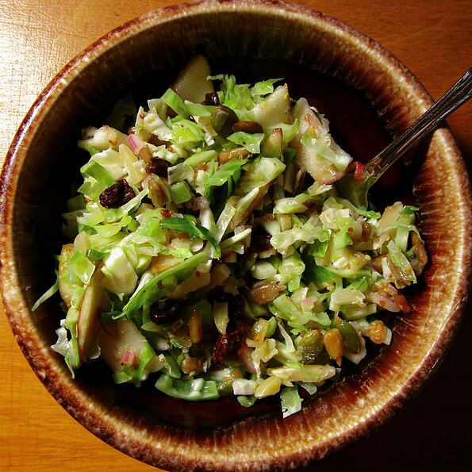

Chopped Brussels Sprout Salad

Don't be scared of raw Brussels sprouts - they are delicious!
Nutritional info
Prep: 20 mins Servings: 8
Total 20 mins Yield: 8 servings
Ingredients
- 1 shallot, minced
- ¼ cup cider vinegar
- ¼ cup sunflower seed oil
- 2 tablespoons Dijon mustard
- ½ teaspoon honey
- ½ teaspoon salt
- ¼ teaspoon ground black pepper
- 6 cups Brussels sprouts, trimmed, halved, and sliced
- 2 Gala apples, cored and thinly sliced
- ½ cup dried cranberries
- ⅓ cup sliced almonds
- ⅓ cup raw sunflower seed kernels
- ⅓ cup shelled, raw pumpkin seeds
Directions
- Whisk shallot, vinegar, oil, Dijon mustard, honey, salt, and pepper together in a small bowl.
- Place Brussels sprouts, apples, cranberries, almonds, sunflower seeds, and pumpkin seeds in a bowl; pour vinegar mixture over and toss to combine.
Back